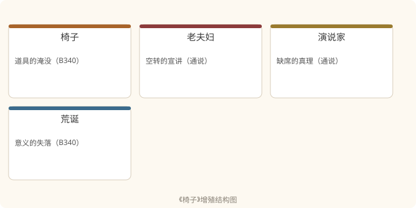

椅子
一、基本信息
| 作者 | 欧仁·尤涅斯库 |
|---|---|
| 成书/出版 | 1952年（Britannica B340：Les Chaises (1952)） Eugene Ionesco — Encyclopaedia Britannica（百科全书） |
| 国别/地区 | 法国 |
| 时代 | 现当代 · 20世纪50年代初 |
| 体裁 | 戏剧 |
| 语言 | 法语 |

《椅子》增殖结构图（主题·结构图）
二、创作背景
Britannica（B340）：Les Chaises (1952)——剧作列表（剧情细节通说待核）。
Britannica（B340）：尤涅斯库——'道具的滑稽增殖直至淹没演员'（'humorous multiplication of objects on stage until they overwhelm the actors'）。
Britannica（B340）：其戏剧呈现'the absurdity of bourgeois life, the meaninglessness of social conventions'。
三、内容脉络
（通说待核——B340未载剧情）老夫妇向越来越满的'椅子'宣讲世界真相。
（通说待核）椅子的增殖：道具淹没演员（B340）。
四、主要人物表
| 人物 | 身份 | 说明 |
|---|---|---|
| 老夫妇 | 宣讲者 | （通说待核，B340未载） |
| 演说家 | 哑角 | （通说待核，B340未载） |
五、主题与艺术特点
- 道具的增殖美学（B340）。
- 存在的空转（B340：futile and mechanical nature）。
- '缺席的观众'与无人的真理（通说待核）。
六、影响与评论
- Britannica：荒诞派开创者之一（B340）。
Eugene Ionesco — Encyclopaedia Britannica（百科全书） - Britannica：'道具滑稽增殖'（B340）。
Eugene Ionesco — Encyclopaedia Britannica（百科全书）
七、阅读建议
难点
- 无人物的满台道具调度。
- '演说家'的哑剧性（通说待核）。
- 《椅子》中译本（人民文学《荒诞派戏剧集》等——通说待核）。
- 法文原版。
尤涅斯库第二作；与《秃头歌女》《犀牛》对读。
八、待核实
- 剧情细节核对（通说）。
- 1952年首演（Théâtre de la Huchette说）待核。
- 演说家角色细节待核。